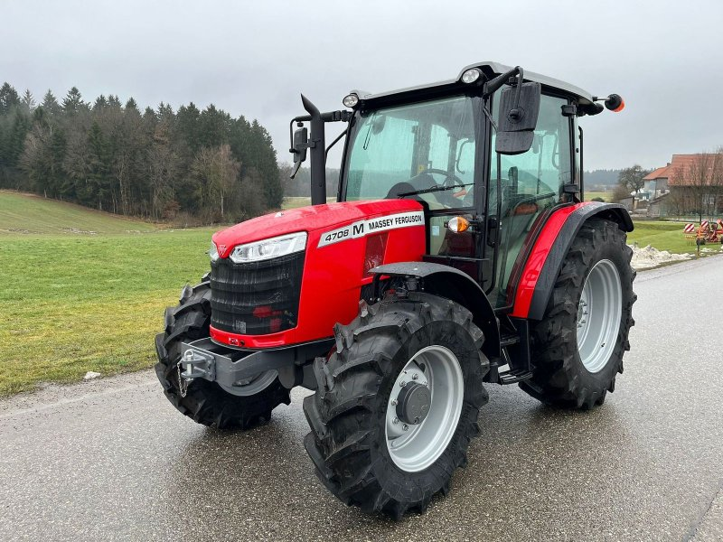

Massey Ferguson 4708

Massey Ferguson 4708 розроблений як надійна, проста в експлуатації та витривала машина для фермерських господарств. Завдяки відсутності складної електроніки та високому крутному моменту, модель є ідеальним рішенням для щоденних робіт: від заготівлі сіна до обробітку ґрунту на невеликих площах.
Трактор вирізняється повністю синхронізованою механічною трансмісією (12x12) із човниковим реверсом, що робить його дуже зручним для роботи з фронтальним навантажувачем. Незважаючи на свою простоту, MF 4708 пропонує сучасний рівень комфорту: простора кабіна з ергономічним розташуванням важелів та відмінною оглядовістю. Це «робоча конячка», яка поєднує в собі європейську якість збірки та невибагливість до умов експлуатації.
| Параметр | Характеристика |
|---|---|
| Клас тяги | 1.4 |
| Тип ходової частини | колісний |
| Колісна формула | 4х4 (повний привід) |
| Тип рами | жорстка |
| Основне призначення | універсально-просапні роботи, тваринництво, транспортні операції, робота з навантажувачем |
| Параметр | Характеристика |
|---|---|
| Модель | AGCO Power 33AWIC |
| Тип двигуна | трициліндровий дизель з турбонаддувом та проміжним охолодженням (Intercooler) |
| Спосіб охолодження | рідинне |
| Розташування циліндрів | рядне, вертикальне (3 циліндри) |
| Робочий об’єм | 3,3 л |
| Номінальна потужність | 61 кВт (82 к.с.) |
| Номінальні оберти | 2200 об/хв |
| Система пуску | електростартер |
| Екологічний стандарт | Tier 4 Final / Stage IV (з технологією SCR та DOC) |
| Питома витрата палива | 205-215 г/кВт.год |
| Параметр | Характеристика |
|---|---|
| Муфта зчеплення | суха однодискова |
| Тип КПП | механічна (Syncroshuttle) |
| Кількість передач | 12 вперед / 12 назад |
| Кількість діапазонів | 2 вперед / 2 назад |
| Діапазон швидкостей (вперед) | 1,4 – 40 км/год |
| Діапазон швидкостей (назад) | 1,4 – 40 км/год |
| Вал відбору потужності | задній незалежний, 540 / 540E об/хв |
| Номер діапазону | Номер передачі | Теоретична швидкість, км/год | Передаточне число трансмісії | Тягове зусилля, кН |
|---|---|---|---|---|
| I (Low) | 1 | 1,4 | 195,0 | 32,5 |
| 2 | 1,9 | 143,7 | 23,9 | |
| 3 | 2,7 | 101,1 | 16,8 | |
| 4 | 3,8 | 71,8 | 11,9 | |
| 5 | 5,5 | 49,6 | 8,2 | |
| 6 | 7,7 | 35,5 | 5,9 | |
| II (High) | 1 | 7,3 | 37,4 | 6,2 |
| 2 | 10,0 | 27,3 | 4,5 | |
| 3 | 14,3 | 19,1 | 3,1 | |
| 4 | 20,2 | 13,5 | 2,2 | |
| 5 | 28,8 | 9,5 | 1,5 | |
| 6 | 40,0 | 6,8 | 1,1 |
| Параметр | Характеристика |
|---|---|
| Тип коліс | пневматичні шини |
| Марка шин | 340/85 R24 (передні) / 420/85 R34 (задні) |
| Радіус ведучого колеса | 0,78 м |
| Кількість коліс | 4 (однакові по осях) |
| Ведучі мости | обидва (підключаємий передній міст) |
| Параметр | Характеристика |
|---|---|
| Під час роботи з навантаженням | 10,5 – 14,5 кг/год |
| Під час холостих переїздів | 3,5 – 5,0 кг/год |
| Під час зупинок (холостий хід) | 1,2 – 1,8 кг/год |
| Параметр | Характеристика |
|---|---|
| Маса експлуатаційна | 3900 кг |
| Довжина / Ширина / Висота | 4323 мм / 1925 мм / 2594 мм |
| Колія / База | 1600 мм / 2250 мм |
| Дорожній просвіт | 435 мм |
| Мінімальний радіус повороту | 3,8 м |
| Об’єм паливного баку | 105 л |
| Параметр | Характеристика |
|---|---|
| Особливості кабіни | герметизована, з вентиляцією та опаленням |
| Гальма | робочі – мокрі багатодискові з гідроприводом |
| Начіпний пристрій | задній триточковий гідравлічний, вантажопідйомність – 3000 кг |